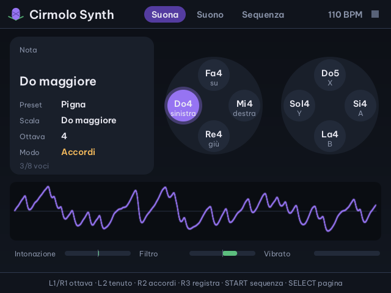
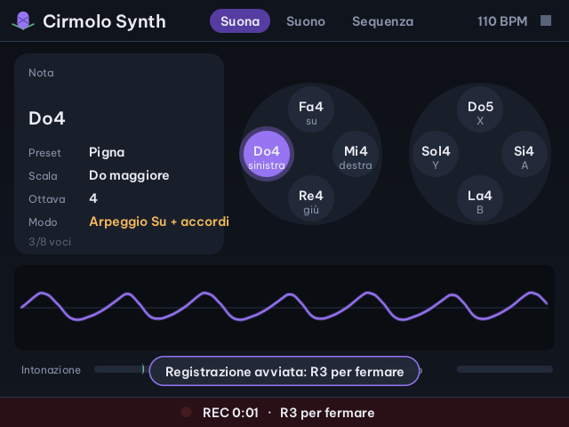
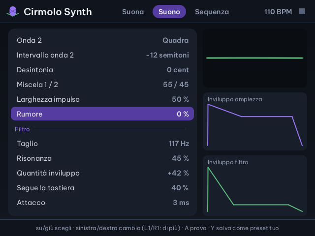
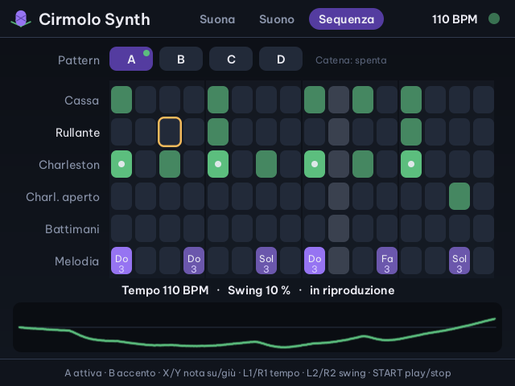

Cirmolo · app musicale per Miyoo Flip
Cirmolo Synth
Un sintetizzatore a otto voci con due oscillatori e un filtro risonante, una batteria a cinque strumenti e un sequencer a 16 passi. I tasti della Flip suonano sempre dentro la scala che scegli: non si sbaglia una nota.
Con una tastiera MIDI USB, come la MPK mini, diventa uno strumento vero: note con la dinamica, pad sulla batteria, manopole sul filtro e sugli effetti.
Nella Home di Cirmolo, sotto Musica. Le schermate di questa pagina vengono dal codice dell'app, compilato sul PC.

Suonare
Otto tasti, otto note della scala
La croce e i quattro tasti A, B, X e Y suonano otto gradi della scala, dal più grave al più acuto: croce sinistra, giù, destra, su, poi Y, B, A e X. Lo schermo mostra sempre quale nota c'è sotto ogni tasto.

Accordi
Con R2 tenuto ogni tasto suona una triade della scala, e lo schermo ne scrive il nome: maggiore, minore, diminuito.
Tenuto
Con L2 tenuto le note continuano anche quando lasci il tasto, come con il pedale del pianoforte.
Ottava
L1 e R1 spostano la tastiera di un'ottava, dalla prima alla settima.
Levette
Sinistra: in orizzontale piega la nota di due semitoni, in verticale apre e chiude il filtro. Destra: in orizzontale la risonanza, in su il vibrato.
Pagina Suona
| Croce, Y B A X | otto note della scala |
| R2 tenuto | accordi |
| L2 tenuto | note tenute |
| L1 · R1 | ottava giù · su |
| Levette | bend, filtro, risonanza, vibrato |
In ogni pagina
| SELECT | pagina successiva: Suona, Suono, Sequenza |
| START | fa partire o ferma la sequenza |
| R3 | registra in WAV; di nuovo R3 ferma |
| L3 | spegne tutte le note |
| MENU | esce (A o giù conferma); suoni e sequenza restano salvati |
Il suono
Tutto il suono in una pagina
Nella pagina Suono su e giù scelgono il parametro, sinistra e destra lo cambiano; tenendo L1 o R1 i passi sono più grandi. A fa sentire una nota di prova, Y salva il suono tra i tuoi preset, B torna a Suona.

- Generalepreset, tonalità, scala, volume
- Oscillatoridue onde (dente di sega, quadra, triangolo, sinusoide), intervallo e desintonia della seconda, miscela, larghezza dell'impulso, rumore
- Filtrotaglio, risonanza, quantità dell'inviluppo, quanto segue la tastiera, e il suo inviluppo: attacco, decadimento, sostegno, rilascio
- Ampiezzaattacco, decadimento, sostegno, rilascio
- Modulazionevelocità dell'LFO, LFO sull'intonazione e sul filtro
- Esecuzionemonofonico, glide, saturazione
- Arpeggiatoresu, giù, su e giù, casuale; da 1/32 a 1/4; da una a tre ottave
- Effettidelay a tempo (da 1 a 8 sedicesimi) con ritorno e livello, riverbero, volume della batteria
Otto preset di fabbrica
Pigna, Basso Dolomiti, Lead Cirmolo, Pizzico, Organo, Archi, Campana, Otto bit.
Otto preset tuoi
Y nella pagina Suono salva il suono come «Mio 1», «Mio 2» e così via. Un preset modificato ha un asterisco accanto al nome.
Otto scale
Maggiore, minore, dorica, misolidia, pentatonica maggiore e minore, blues, cromatica, su qualsiasi tonica.
Sequenza
Batteria e melodia in 16 passi
Cinque righe di batteria (cassa, rullante, charleston chiuso e aperto, battimani) e una riga di melodia, che usa le note della scala. Quattro pattern, A, B, C e D, che si possono mettere in catena. START fa partire tutto.

Pagina Sequenza
| Croce | sposta il cursore; in cima c'è la riga dei pattern |
| A | accende o spegne il passo; nella melodia mette la nota |
| B | accento sul passo |
| X · Y | nella melodia: nota su · giù |
| L1 · R1 | tempo, un BPM alla volta (da 40 a 240) |
| L2 · R2 | swing, a passi del 5% |
| START | play e stop |
Sulla riga dei pattern: sinistra e destra scelgono il pattern, A lo mette o lo toglie dalla catena, B lo copia nel successivo.
Tastiera MIDI
Con una tastiera MIDI USB
Collega la tastiera alla porta USB-C, anche ad app già aperta: compare il suo nome e si suona subito. Le note arrivano esatte, con la dinamica; i tasti della Flip continuano a funzionare insieme alla tastiera.

Cosa fa la tastiera
| Tasti | note, con la forza con cui suoni |
| Pad, canale 10 | batteria: i primi cinque pad sono cassa, rullante, charleston, charleston aperto e battimani; gli ultimi tre ripetono cassa, rullante e charleston più forti |
| CC70 – CC77 | le otto manopole della MPK mini: taglio, risonanza, inviluppo del filtro, attacco, rilascio, velocità dell'LFO, livello del delay, riverbero |
| Modulazione (CC1) | vibrato |
| Sustain (CC64) | note tenute |
| Pitch bend | più o meno due semitoni |
| Program change | cambia preset |
File sulla scheda SD
Dove finisce quello che suoni
Lo stato si salva da solo all'uscita: alla prossima apertura ritrovi preset, scala e pattern come li avevi lasciati.
Saves/cirmolo-synth/registrazioni/registrazione-001.wavle registrazioni fatte con R3, WAV stereo a 16 bitSaves/cirmolo-synth/preset-utente.txti tuoi presetSaves/cirmolo-synth/stato.txtsuono, scala, tempo e patternSaves/spruce/cirmolo-synth.logil registro dell'appApp/CirmoloSynth/srci sorgenti in C, con le prove automatiche
Le altre app